The Climb, alive
2026-11-16. Your ask: "look at the map and fill it more, to be more lively". The Sea came first; after your yes the other four chapters got the same kind of life, each what fits its lore and look, one chapter at a time.
Chapter I: the Sea (floors 1 to 10)
What is new on the Sea floors
- Gulls. They sit on the lighthouse's gallery, the wrecks, the cottages' ridges, rocks, crates, the stake nets, the sand, the tidal flats and the water. When you walk up they lift off, wheel over you and come down again a little way off. They leave the flats when the tide turns, and a fight nearby scares them up. Wherever you go on a floor, some come over.
- Smoke from the camp fire, the beacons, about half the cottages' chimneys and the cooking fires past the edge.
- Cloth in the wind: washing strung across the village lanes (high over your head), pennants on the tents, on the lighthouse's top and on poles in the water, nets drying on stakes in the shallows, sails on the boats.
- On the water: rowing boats moored at the jetties and fishing boats under sail standing off the shore, all rocking on the swell; rings spreading in the shallows, and now and then a fish leaping.
- People walking beside the paths between places, away from the packs (on a computer only). They stop when you are in their way and turn back from a fight. A stand-in figure for now: see the choices below.
- Small things on the ground at the places' edges and on the sand: coils of rope, baskets of fish, glass floats, oars, buckets, folded sails, driftwood. All ankle-high and off the paths, so nothing you walk through looks wrong.
Everything follows each floor's own layout (its places, paths, cover and spots), so a floor moved or made again keeps its life where it fits. None of it is in a fight: no walls, no enemies, nothing the path finding sees, and the fights play exactly as before (checked: the same fight to the last number, life on or off).
Clips
Real game time, the game's own camera. Pictures can't show what moves, so these matter most.
Before and after
The same view, the same moment, life off (left) and on (right). Four of the ten floors.
Floor 1, the Drowned Harbour: the camp
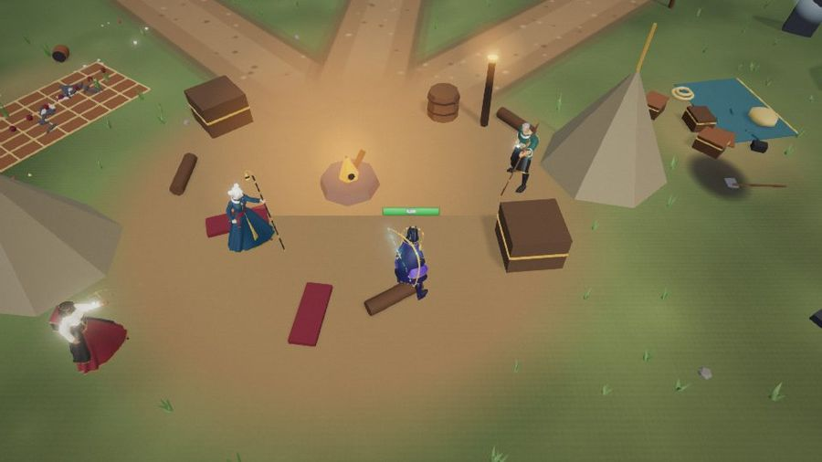

Floor 1: the east shore

Floor 1: the village lane

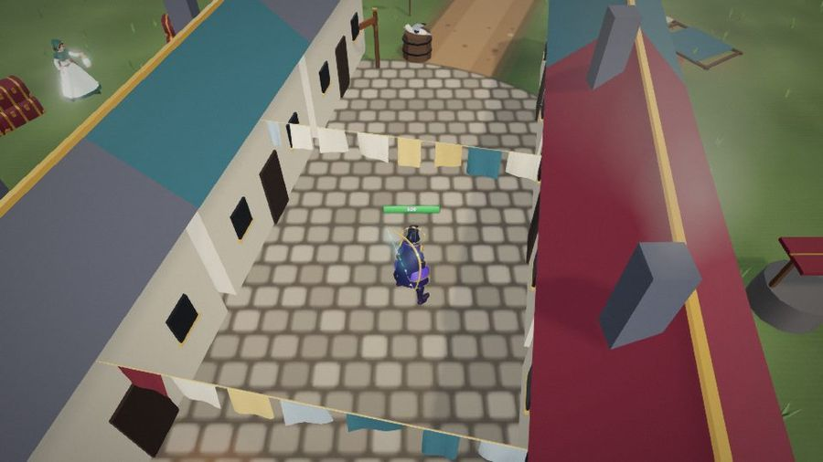
Floor 3, Gull Point: the camp
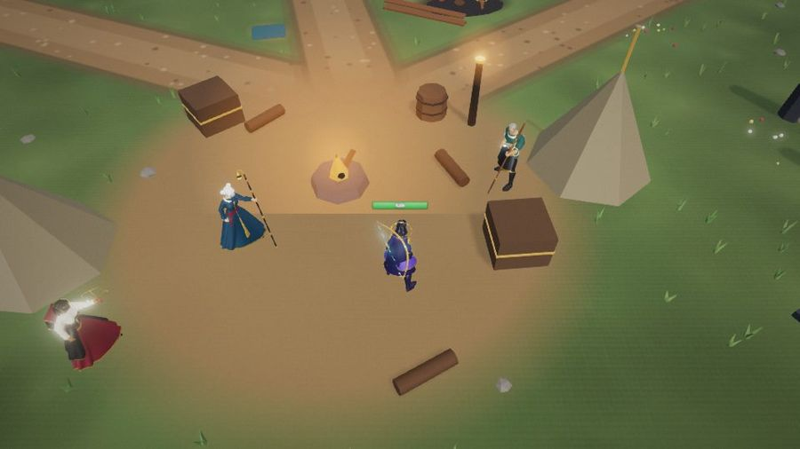

Floor 3: the shipyard

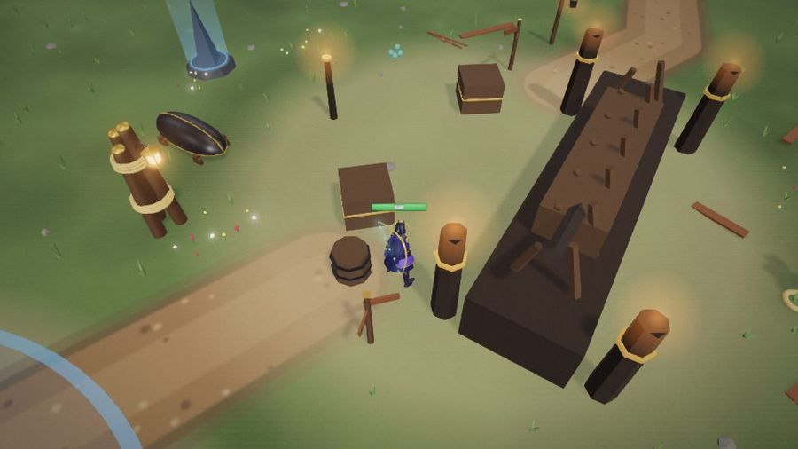
Floor 5, Wreckers’ Cove: the village
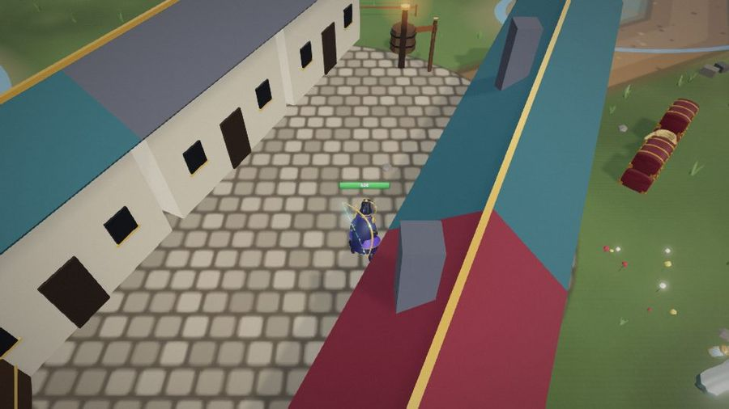

Floor 5: the beacon
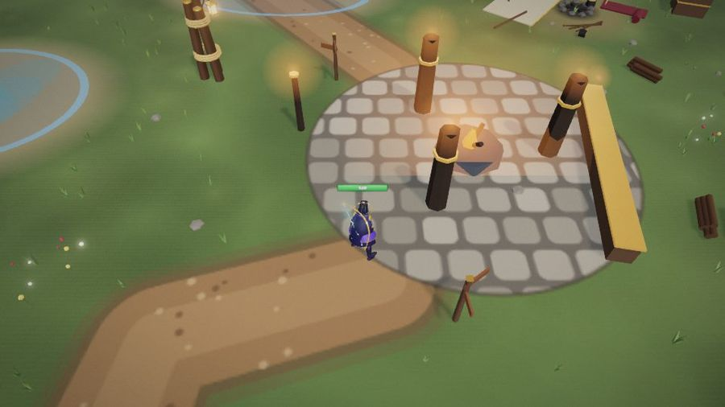
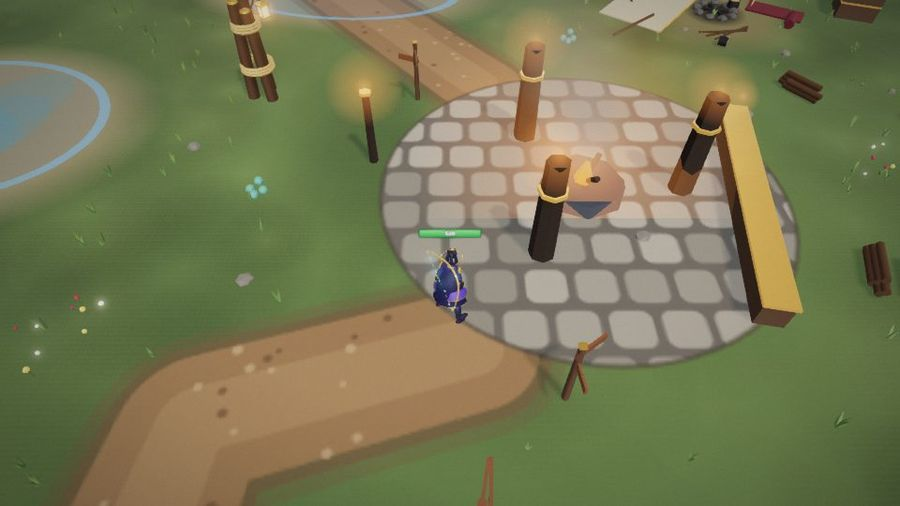
Floor 8, the Anchorage: the camp
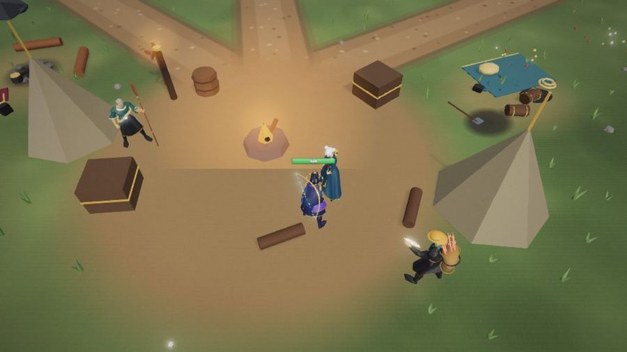
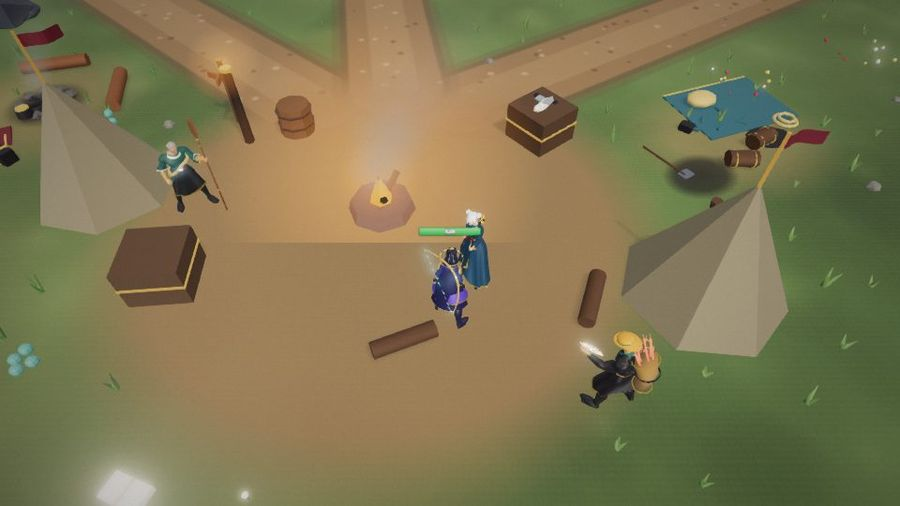
Floor 8: the beacon
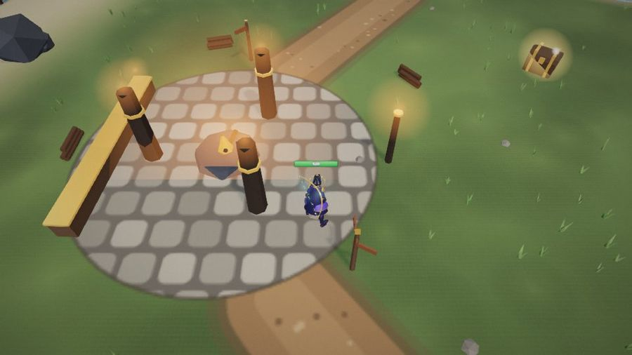
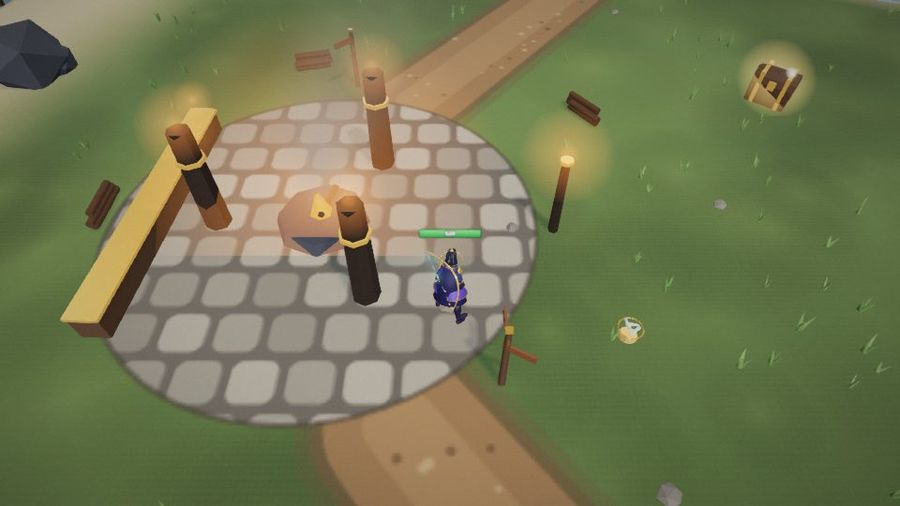
Floor 1: at the water, from low on the shore (the game's camera seldom looks this way; this is to see the boats)
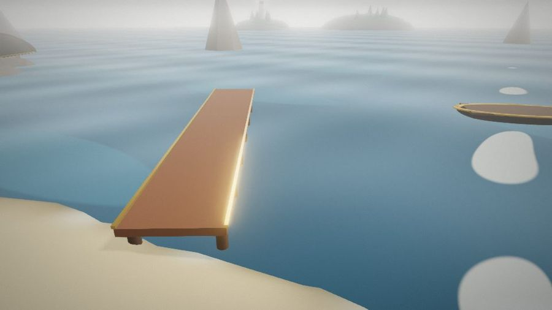
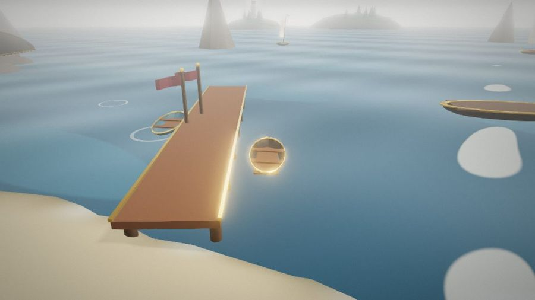
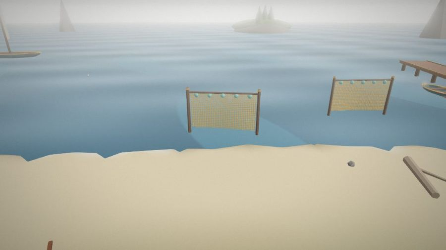
On a phone
Phones get a lighter set: 20 gulls instead of 44, no walking people, no leaping fish, fewer rings and boats. Smoke, cloth and the small things stay (they cost almost nothing).


What it costs
The game's own speed tool (pipeline/tools/perf.py), the hero set down beside one pack after another for 25 s. Life off
and life on in turns, two of each (the computer was busy with other agents, so each number has a few tenths of noise on a computer and
several milliseconds on the slowed phone). The middle frame, in milliseconds:
| Life off | Life on | Without the walking people | Draw calls | |
|---|---|---|---|---|
| Computer, floor 1 | 9.6 / 9.9 | 10.0 / 9.9 | 9.7 / 10.4 | 243 → 273 |
| Computer, floor 5 | 9.6 / 10.3 | 11.3 / 11.0 | 10.1 / 10.4 | 244 → 262 |
| Phone (a computer slowed four times), floor 1 | 26.3 / 32.0 | 39.0 / 34.4 | (no people on a phone) | 249 → 266 |
| Phone (slowed four times), floor 5 | 30.7 / 29.7 | 36.8 / 32.1 | 247 → 263 |
- Computer: about 0.3 ms on floor 1 and about 1 ms on floor 5, most of it the walking people (three skinned figures). Sure of this within a few tenths.
- Phone: somewhere between 2 and 5 ms of about 30 (the second pair, measured when the computer was quieter, says about 2.5). Sure of the direction, not of the size: two runs under the same condition differ by as much as the cost itself. The slowed processor is the limit there and each extra draw costs it; if it is too much, the boats can be drawn with fewer draws and the small things made fewer (how much that saves is not measured), or the life can be switched off on phones.
- The fights are the same fights: every run, life on or off, printed the same fight (floor 1
98b0044a, floor 5635120e1). The speed tool's saved fights (docs/perf/data/prints.json) are older than today's code (floor 1 printed98b0044atoday with no life code at all, againstd862aa08there), so the check is life off against life on, on today's code.
Your choices
Decided since (2026-11-16, "you decide"): the walkers stay, as plain workers (now in: a dockhand and a fishwife, see For every chapter); the amount as it is; phones keep the lighter set; no sound for now. The land's chimneys now smoke too. The rest of this list is as it was asked.
src/tower/world/land.ts, which I may not touch. To let their sails move and their chimneys smoke, and to keep my
moored boats off its boats for sure, land.ts would only need to leave what it drew where the life can read it:
into.userData.landLife = { homes, boats: drawn, jetties } before its return (homes with each chimney's top:
{ x, z, top: y + h + w * 0.42 + 1.2 }). Today the life works out the jetties from the outline the same way land.ts does.How it is built
- A layer of its own,
src/tower/world/life/:core.ts(birds, smoke, cloth, water, floating boats, the ground they keep off),sea.ts(the Sea's),walkers.ts(people),index.ts. No floor's file changed. - The hook: three lines in
src/tower/world/world.ts, where the floor's people and scenery are made, updated and put away; the life is made, updated and put away beside them. - Each kind of thing is one draw for all of them, moved on the graphics card; no shadows. It rolls its own dice, so the fights stay the same fights.
- Switches:
?life=0in the address turns it off;?life=liteshows the phone's set on a computer.
Chapter II: the Wood (floors 11 to 20)
The Walking Wood in its first year of walking (the codex: groves shift in the night, paths close behind you). The zone already had fireflies over the glades, leaves drifting down under the trees, birds far over the hills, the burners' smoke and the lanterns, so this adds what lives in the wood near you.
What is new
- Wood pigeons in the crowns of the bands of trees (they burst out as you pass under), on logs, stumps, stones, crates and the burners' roofs, and on the grass of the glades. They lift off when you come near or a fight does, wheel over the trees and settle again away from you.
- Hinds in twos and threes at the glades' edges, foxes near the thickets and dens, hares in the open grass. They graze, lift their heads to look round, and bolt from you (or a fight) into the trees; when you have gone they walk back. No antlers and no crowns on purpose: the Wood's crowned stags are its enemies, and nothing here may be taken for one.
- Woodsmoke from the camp's fire and the burners' huts (through the thatch), and a thin thread of incense at the shrines.
- Cloth: pennants on the camp's tent poles; blankets and hides airing on a line at the camp and at the burners, hung high (their feet 2.5 m up) so you walk under them, as under the Sea's washing.
- Butterflies over the glades, dragonflies and rings on the spring's pool.
- People walking beside the trails (on a computer only), as on the Sea: the Wood's plain worker, a woodcutter with a pack, made for it in Blender (no name, so nobody meets a named person twice).
Not caught in a picture or clip here yet (built, but too small or too brief from the game's camera to show): the foxes, the butterflies and dragonflies, the shrines' incense.
Clips
Before and after
Life off (left) and on (right), the same spot. Most of what is new moves, so the clips show it better.
Floor 11, the Walking Wood: the camp
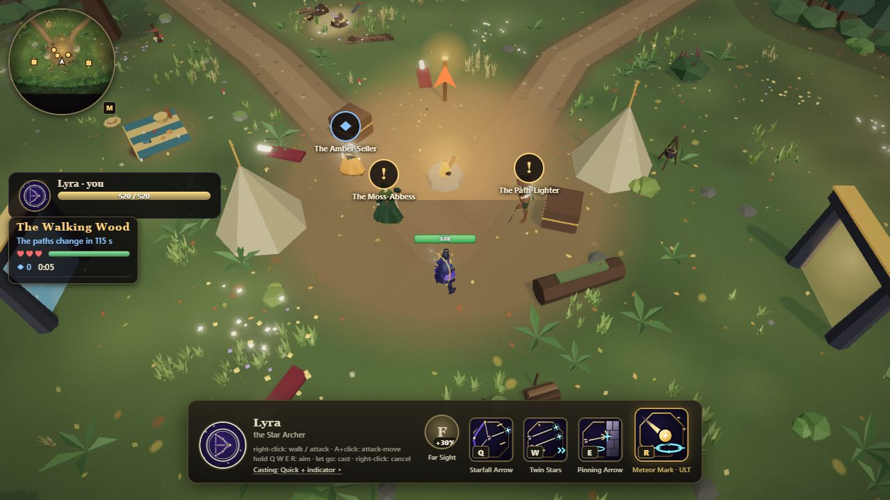
Floor 11: the west lamp glade
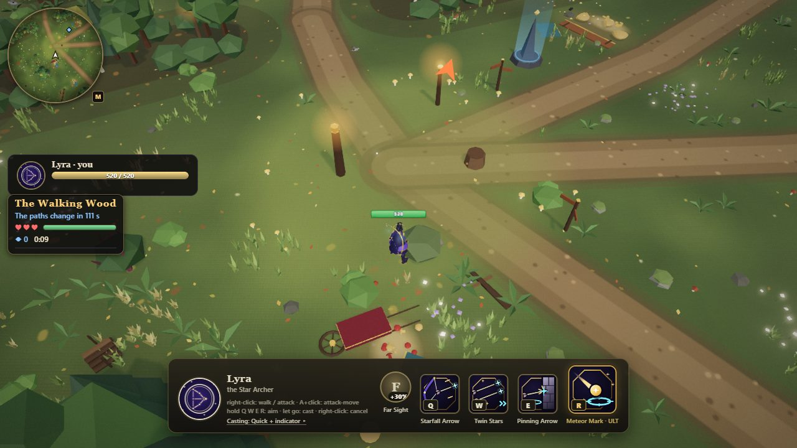
Floor 12, the Mossway: the burners
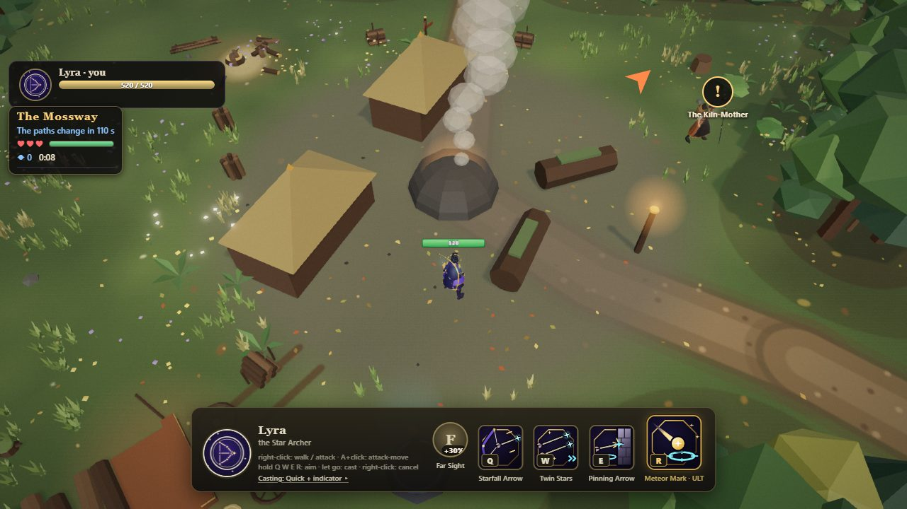
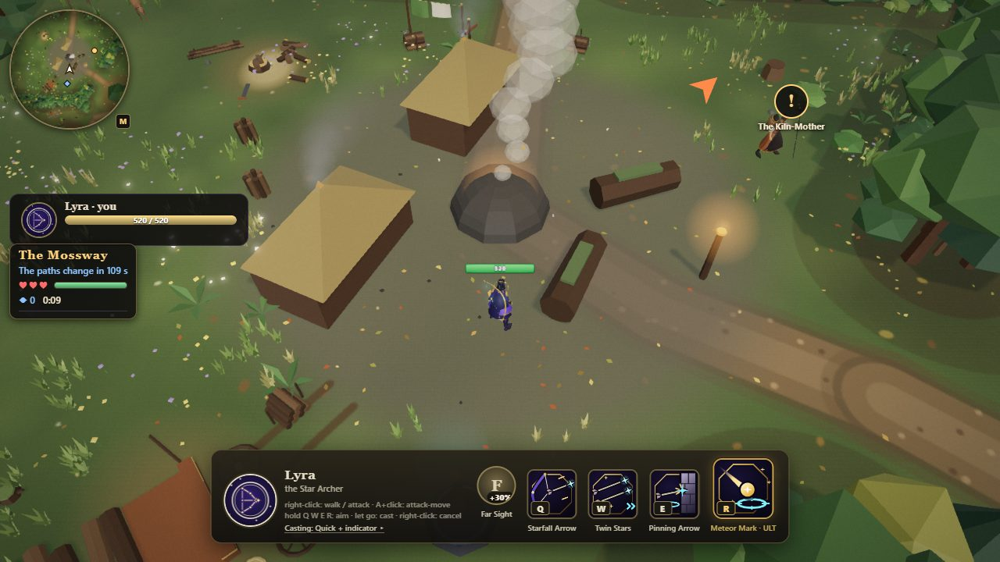
Floor 12: the spring
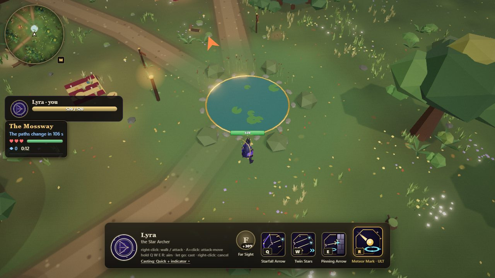
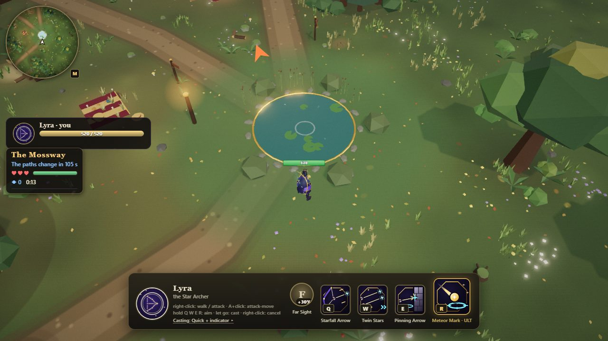
Floor 15, the Antler Glades: the camp
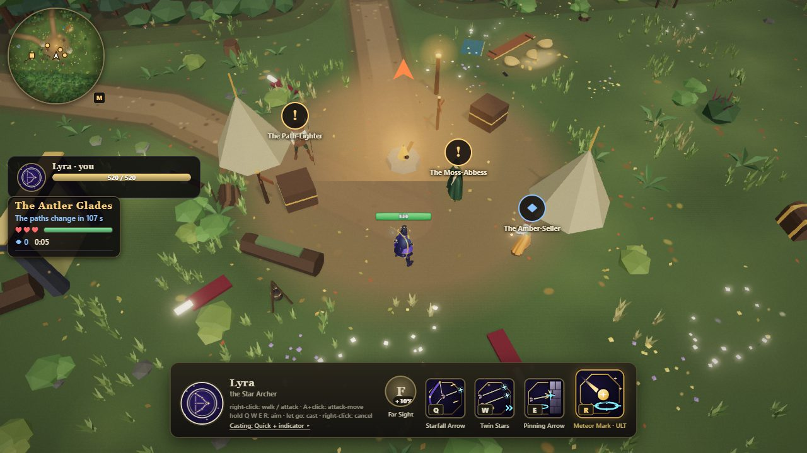
Floor 15: the burners
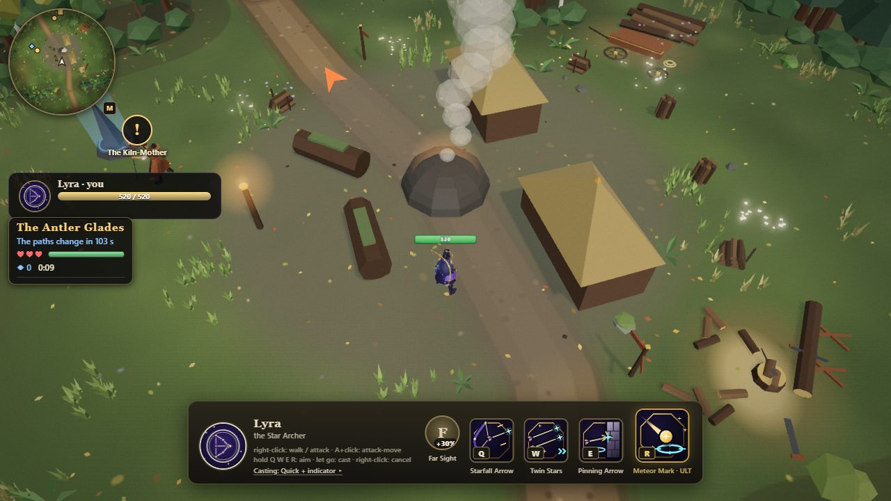
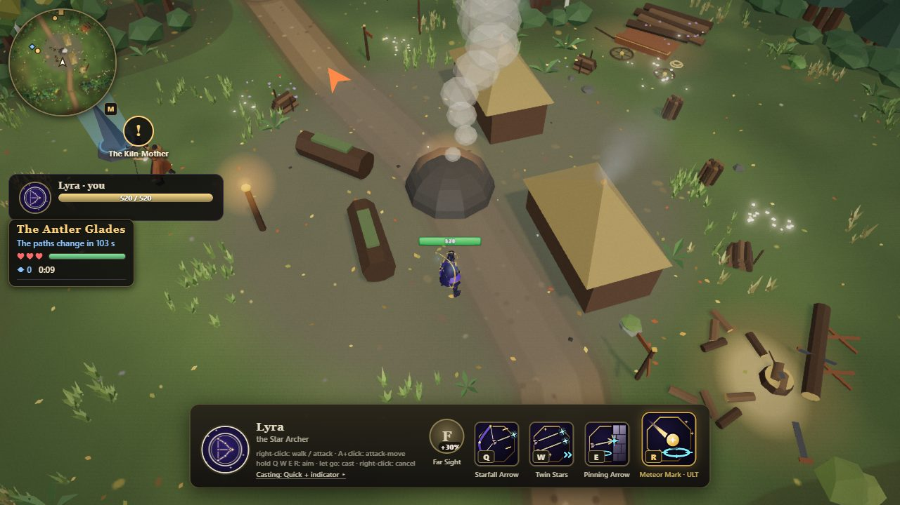
Floor 18, Greyoak Deep: the spring
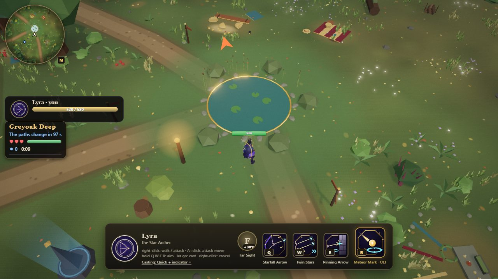
Floor 18: the shrine
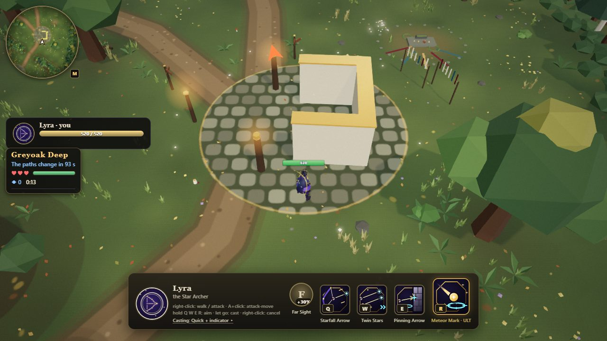
The walkers
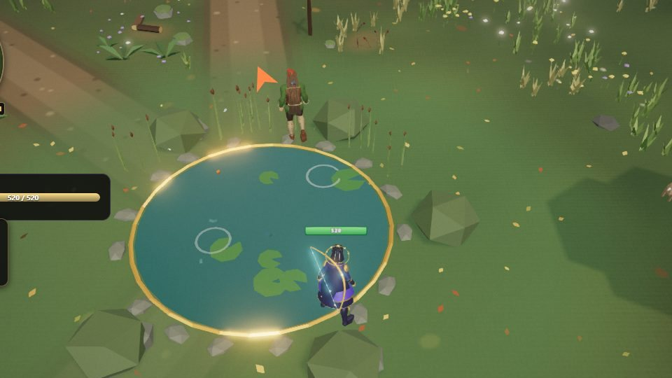
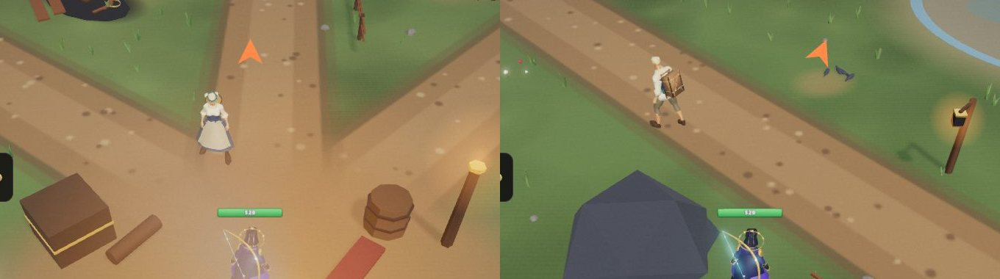
On a phone
The lighter set: half the pigeons, fewer beasts, no butterflies, dragonflies or walkers; the smoke, cloth and rings stay.
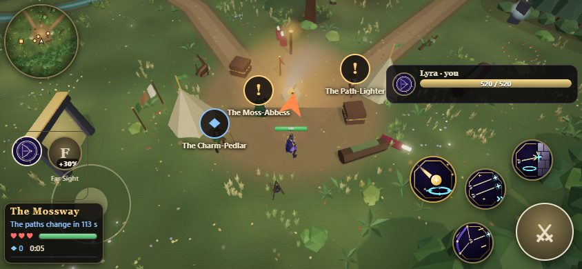
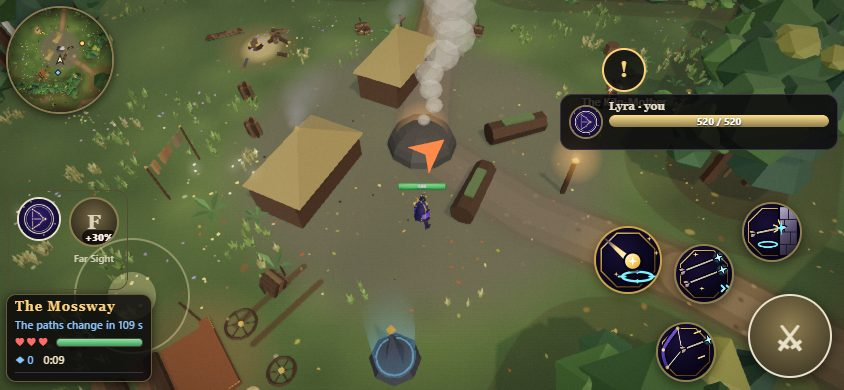
What it costs
The game's speed tool (pipeline/tools/perf.py), the hero set down beside one pack after another for 25 s,
life off and on in turn; the phone runs through the new one-at-a-time lock. Today the computer was shared by several agents, and two
identical desktop runs differed by up to 8 ms, so the frame times below are each run's middle frame, listed as they came.
| Life off (ms) | Life on (ms) | Draw calls | Same fight? | |
|---|---|---|---|---|
| Computer, floor 11 | 13.9 / 18.2 / 14.1 / 13.1 / 11.0 / 16.9 | 19.9 / 11.7 / 17.9 / 15.0 / 9.7 / 9.7 | 192 → 208 | yes, all 12 |
| Computer, floor 12 | 16.9 / 20.4 | 20.3 / 16.2 | 240 → 259 | yes |
| Computer, floor 15 | 19.5 / 14.3 | 19.4 / 20.5 | 244 → 254 | yes |
| Phone (slowed four times), floor 11 | 63.9 / 84.3 | 24.9 / 101.6 | 204 → 210 | yes |
| Phone (slowed four times), floor 15 | 25.1 | 27.6 | 248 → 255 | yes |
- Computer: too small to see under today's noise. Timed on its own, the Wood's life takes 0.07 to 0.15 ms of the processor a frame (the Sea's: 0.17 to 0.27); the rest is about 16 to 19 more draws, most of them the three walkers.
- Phone: floor 11's two pairs were taken while the computer was swamped (one run 2.5 times another): they say nothing about the cost. Floor 15 says about 2.5 ms of about 25 (as on the Sea), 7 more draws: the phone set has no walkers or butterflies. Sure of the direction, not of the size within a millisecond or two.
- The fights are the same fights: every run, life on or off, printed the same fight (floor 11
433b3ded, floor 1272213473, floor 158e91ae97), with the walkers made and drawn in those scenes (checked), and again after the stand-ins were swapped for the woodcutter. The Sea, checked again with its new walkers: floor 198b0044aboth ways.
Chapter III: the Sands (floors 21 to 30)
The Storm Canyon in the great storm of the year after the Fall: a red canyon, a caravan that never reached Tamerit still trying to. The zone already had vultures over the far cliffs, a caravan walking the far dunes, waymark cloths, awnings and prayer flags; this adds what lives near you.
What is new
- Kites (the bird) on the palms' crowns, the standing columns, the walls' tops, the wells' beams, the watchtower and the rocks, a few always circling high. They lift off when you come near, a fight does, or the storm comes, and settle again after it.
- Camels of the lost caravan, tethered at the caravanserai, the oasis and the wells, a turquoise saddle cloth with a gold edge. They don't bolt: they turn their heads to watch you pass, lower them to drink, and step a few metres aside if you walk right up to them (then go back to their place).
- Lizards in the sun at the rocks' feet; they dart off when you come.
- Cloth: pennants on the tents and the watchtower, dyed cloths drying on lines at the caravanserai and the camp (the market's cloths: turquoise, wine, ochre, cream).
- Smoke from the fire bowls and the watchtower's fire; rings on the oasis pools.
- People walking beside the roads (on a computer only): the Sands' water-carrier, a jar on her head.
- Nothing marks the ground: marks in the sand are the Scarab's tell in the lore, and nothing here may be taken for them.
- Tried and left out: sand blowing low over the ground and dust devils. From the game's high camera the one is sand on sand (invisible) and the other a column seen end on, which read as a pale blob. No heat shimmer either: it would be a new full-screen pass, costly on a phone.
Not caught in a picture yet: the kites leaving when the storm comes (it works as the Sea's gulls leave the flats at the tide), the watchtower's pennant.
Clip
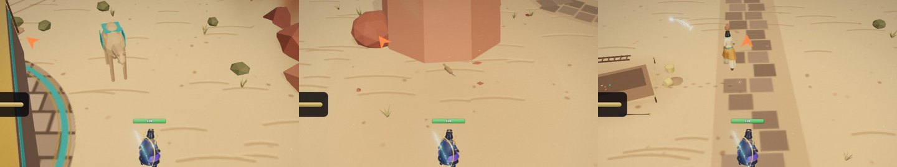
Before and after
Life off (left) and on (right), the same spot.
Floor 21, the Storm Canyon: the camp
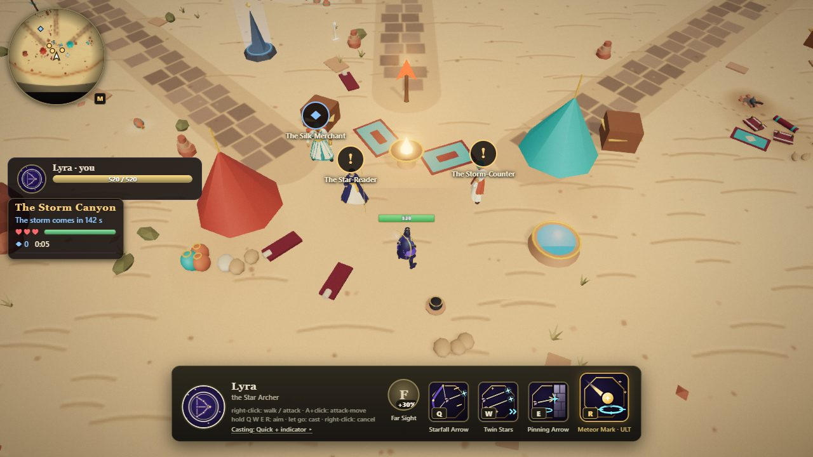
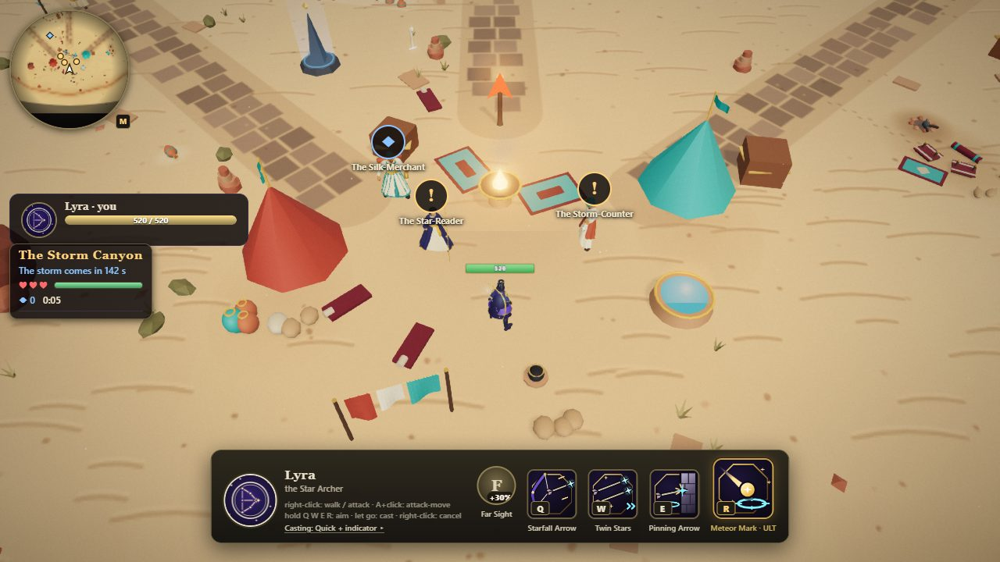
Floor 21: a well
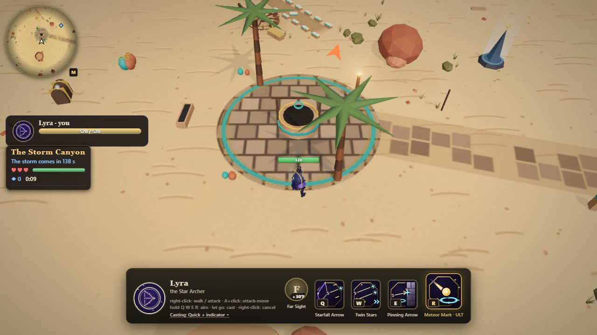
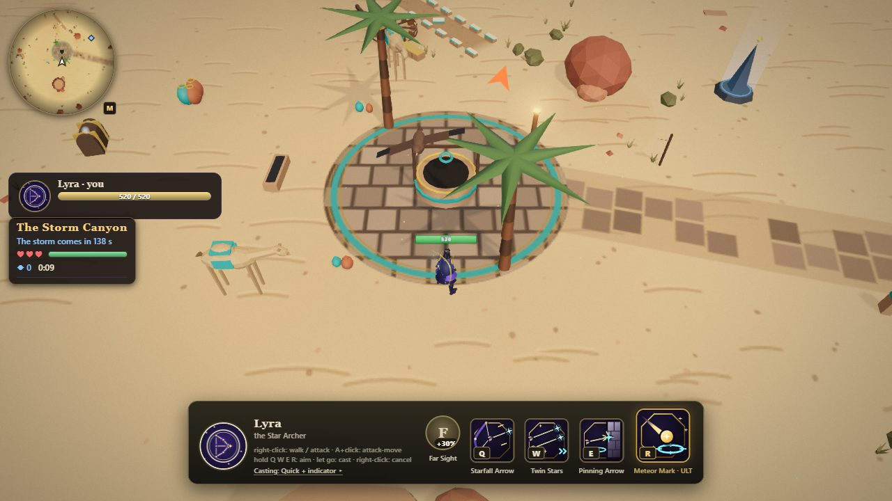
Floor 22, the Red Wadi: the caravanserai
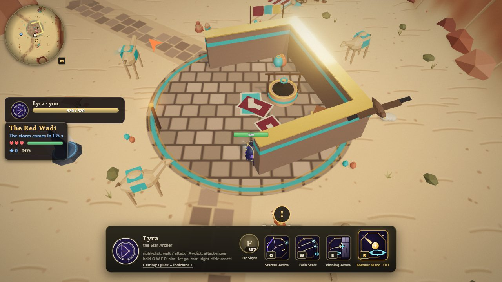
Floor 22: the oasis
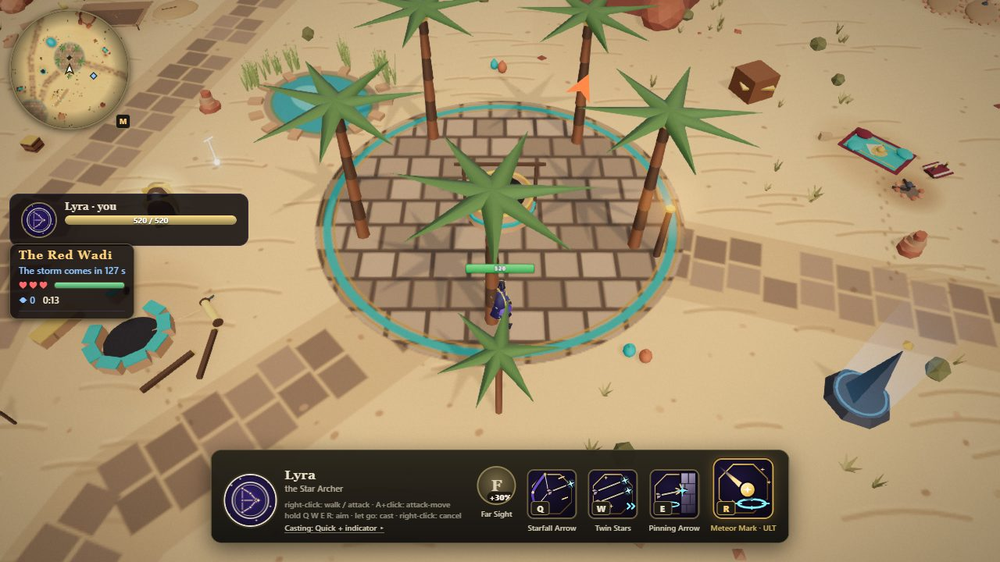
Floor 25, the Singing Dunes: the caravanserai
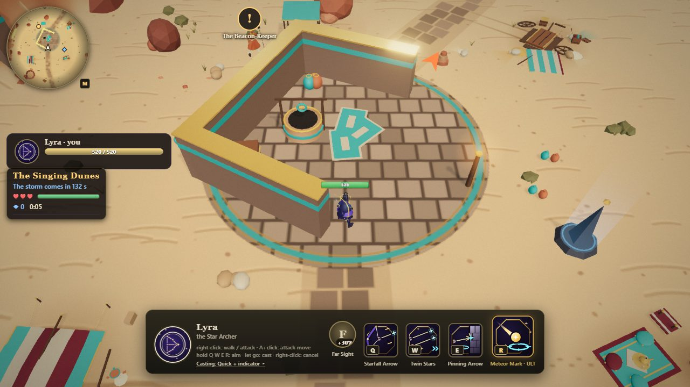
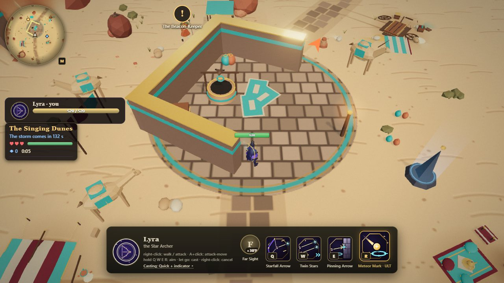
Floor 28, the Scorpion Steps: the caravanserai
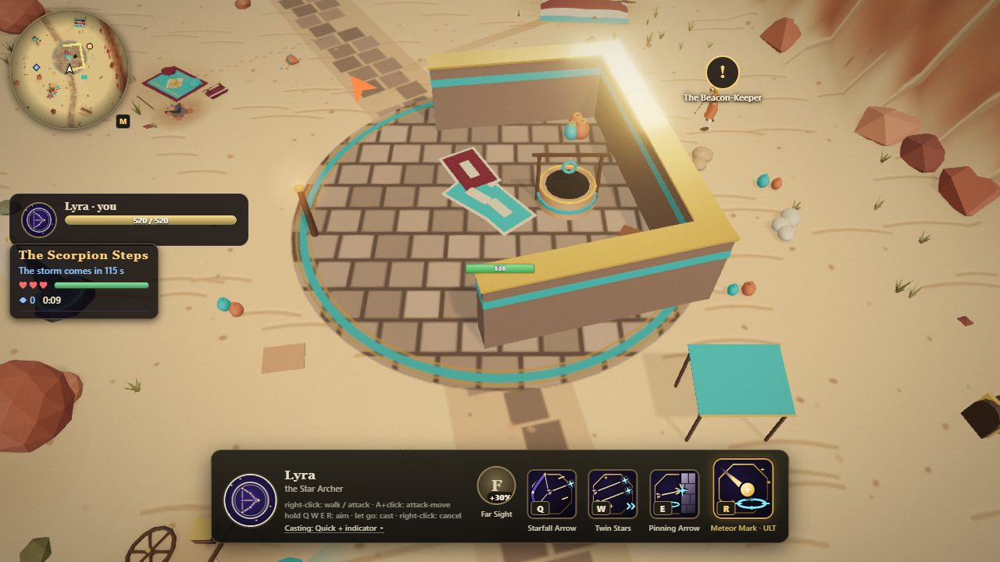
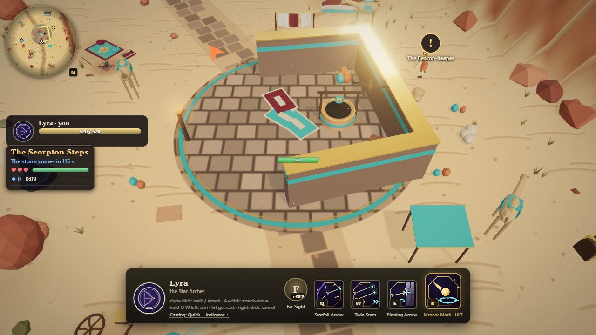
On a phone
The lighter set: half the kites, fewer camels and lizards, no walkers; the smoke, cloth and rings stay.
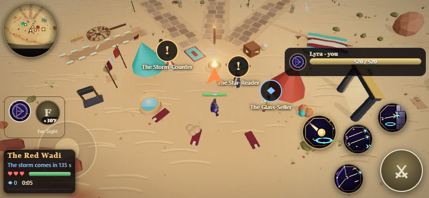
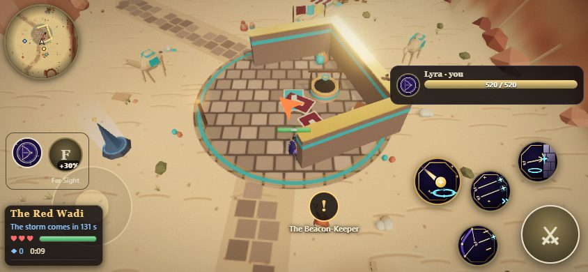
What it costs
| Life off (ms) | Life on (ms) | Draw calls | Same fight? | |
|---|---|---|---|---|
| Computer, floor 21 | 24.1 | 28.4 | 189 → 202 | yes (45b46573) |
| Computer, floor 25 | 21.7 | 25.2 | 215 → 233 | yes (f3eab003) |
| Phone (slowed four times), floor 25 | 88.6 | 102.4 | 221 → 227 | yes |
- The computer was loaded by other agents' work through all of these (the same scenes ran at about 13 ms on a computer and 25 on the slowed phone earlier in the day), so the frame times say little; only their print (the same fight) and the draw calls are sure. Timed on its own, the Sands' life takes 0.11 to 0.17 ms of the processor a frame; it adds 13 to 18 draws on a computer (most of them the three walkers) and 6 on a phone.
- A quiet measurement of all four chapters is in the hand-over (one command, with no other agent running).
Chapter IV: the Deep (floors 31 to 40)
The far halls on the night their crystals went out: "only crystals give light, and beyond their glow you see nothing, and the lurkers hunt there." The zone already had bats under the north wall, the waterfall and the glints on the black lake. Two rules from the lore shaped this chapter: nothing here makes light of its own (the only living light in the Deep is the Firefly-Seller's, in her jars), and nothing dark stands still at the edge of the light (that is what a lurker does). So the Deep's life is quiet, as it should be: it shows where there is light.
What is new
- Moths round every crystal, lamp and fire: pale wings, drawn to the light, seen only in it.
- Spores hanging in the air round you, rising slowly; seen where a crystal lights them.
- Drips falling from the dark into the glowing pools, a ring opening where each lands; a pale blind fish going slowly round a pool here and there.
- Bats flitting low over the halls, a few, never still.
- Smoke from the camp's fire and the stoves of the miners' huts.
- People walking beside the mine's tracks (on a computer only): the Deep's miner.
Not caught in a picture yet: the bats (dark and quick in the dark), the stoves' smoke beyond a faint thread.
Clip
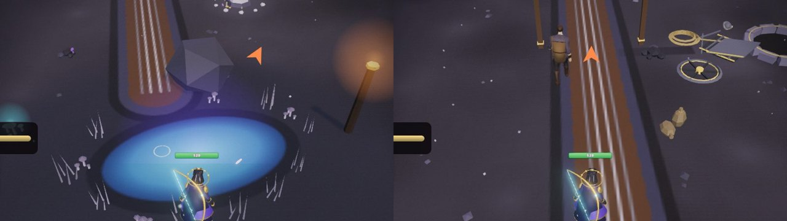
Before and after
Life off (left) and on (right), the same spot. In the dark the changes are small on purpose; the clip shows them moving.
Floor 32, the Amethyst Seam: the pools
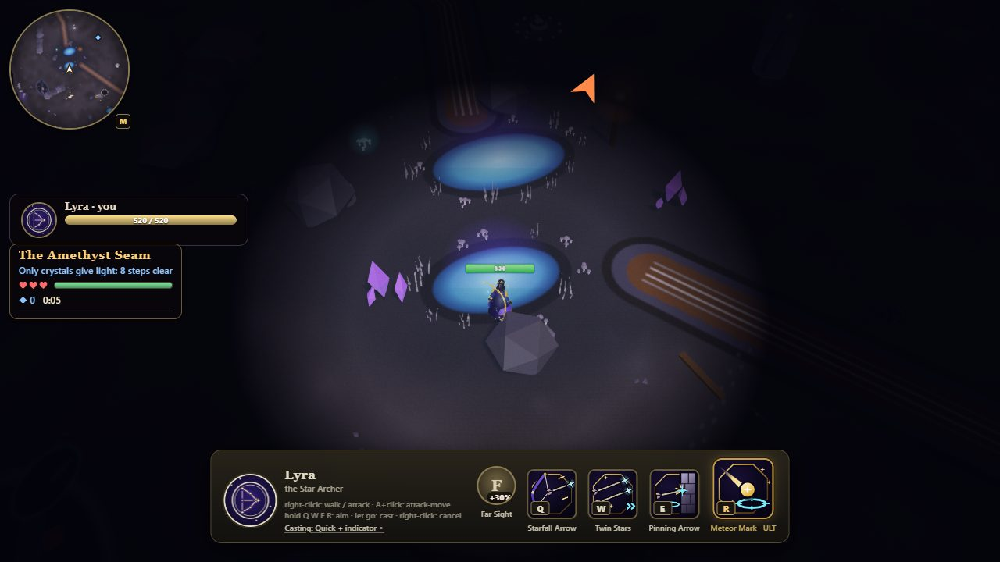
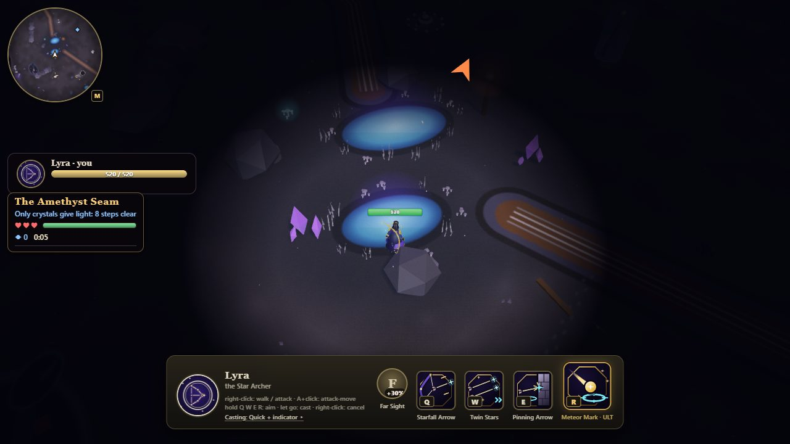
Floor 31, the Lightless Deep: the pools
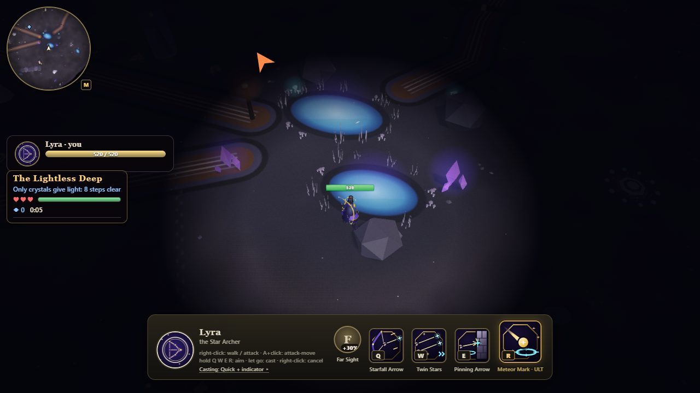
Floor 38, the Sunless Market: the miners' rest
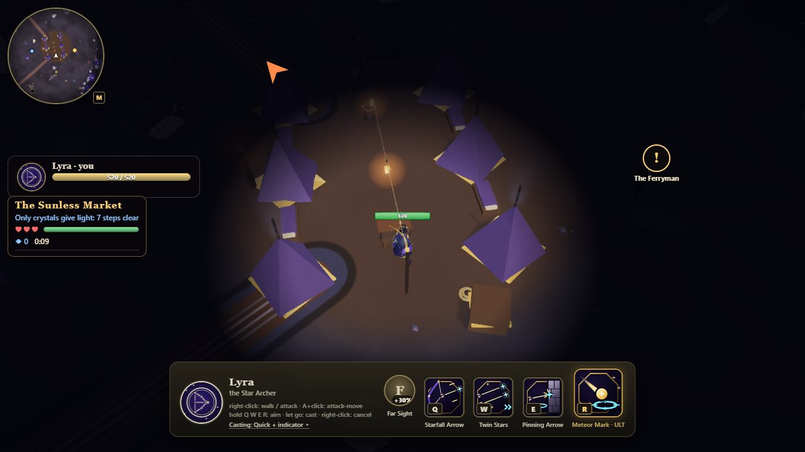
On a phone
The lighter set: half the moths, fewer spores and drips, no fish and no walkers.
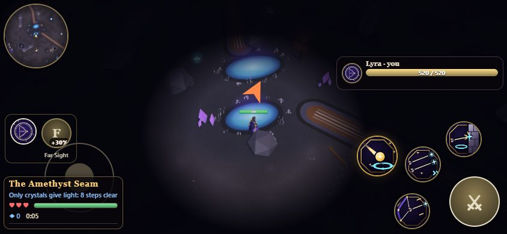
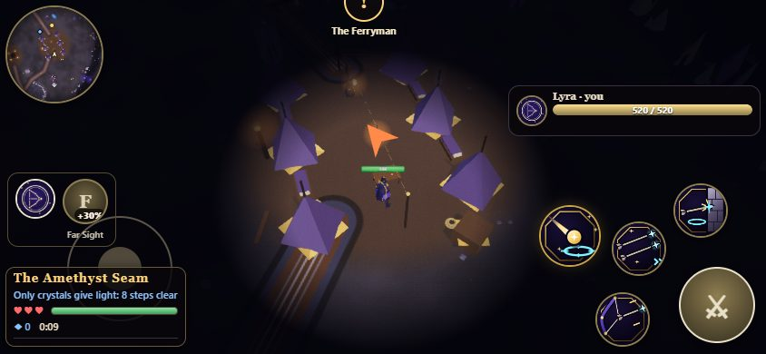
What it costs
| Life off (ms) | Life on (ms) | Draw calls | Same fight? | |
|---|---|---|---|---|
| Computer, floor 31 | 17.7 | 16.8 | 186 → 205 | yes (19e8c310) |
| Computer, floor 35 | 19.2 | 16.4 | 194 → 202 | yes (963fdc00) |
| Phone (slowed four times), floor 35 | 84.7 | 35.4 | 194 → 200 | yes |
- Again under other agents' load: the frame times only show the noise (here life on came out faster). Sure: the same fight both ways, and 8 to 19 more draws on a computer (the three walkers most of them), 6 on a phone. The Deep's life moves nothing on the processor but the bats and the walkers.
Chapter V: the War (floors 41 to 50)
The Field of Banners in the last days of the War: a grey evening after a day of battle, warm low sun through smoke. The zone already had crows wheeling far over the field, columns of smoke from the far camps, banners on the roads and the gate towers, and the rain; this adds what lives, and smoulders, near you.
What is new
- Crows on the stakes, the palisade, the fences, the walls' broken tops, the wagons, the shields and the field itself. They lift off when you come near or a fight does, wheel, and come down again.
- Ash drifting down everywhere, and smoke: the burned farm still smouldering (dark), the braziers, the camp's cooking fire.
- Horses of the wagon train, tethered at the wagons: they don't bolt; they graze, turn their heads to watch you, and step a few metres aside if you walk right up to them.
- Cloth: sheets and bandages drying on lines at the field hospital (the White Sister's), pennants in their army's colour by the war drums. The standards' own cloth is the law's (it flies the colours), so nothing is added to them.
- People walking beside the roads (on a computer only): the War's gleaner.
Not caught in a picture yet: the burned farm's dark smoke, the pennants by the drums.
Clip
Before and after
Life off (left) and on (right), the same spot. (The "Two banners" panel is the floor's own and shows in both.)
Floor 42, the Mud Fields: the field hospital
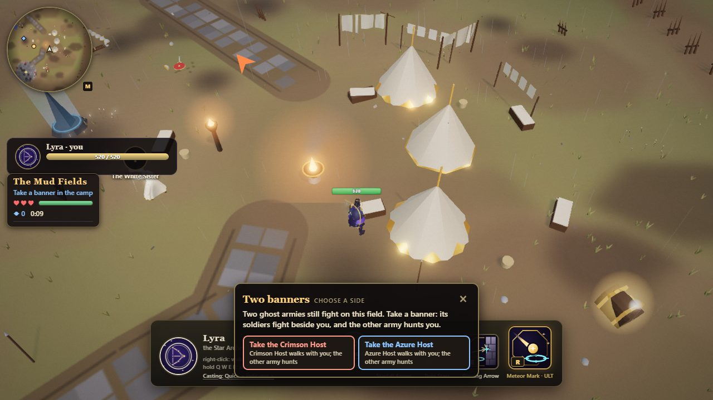
Floor 42: the wagons
Floor 45: the field hospital
On a phone
The lighter set: half the crows, one horse a wagon train, less ash, no walkers; the smoke and cloth stay.
The War's fights, and a fix in the War's rain
Here the check first failed: with the life on, the speed tool's fight on floors 41 and 45 came out a different fight, and not even
the same one twice. Laying one fight over the other die by die found it: the War's rain (a picture only) picked where each
raindrop starts with the fight's own dice: the two runs parted exactly where a drop landed in one and not the other. How the life
shifted the drops is not pinned down; what is measured is that with the rain on dice of its own the prints match, life on or off,
every run. The rain now has dice of its own (one change in src/tower/world/warZone.ts; it looks the same). Since then the War's fight is the same with the
life on or off, every run. Its print changed with it, so the War floors' saved prints are older than this code.
What it costs
| Life off (ms) | Life on (ms) | Draw calls | Same fight? | |
|---|---|---|---|---|
| Computer, floor 41 | 23.3 | 27.2 | 310 → 316 | yes (5267e5db), after the rain's fix |
| Computer, floor 45 | 21.1 | 27.2 | 339 → 346 | yes (18d15a15, four runs), after the rain's fix |
| Phone (slowed four times) | not measured: the timing lock was busy with another agent's run until the wait ran out | |||
- Under load again (these scenes ran near 13 ms on a quiet computer). Timed on its own, the War's life takes 0.06 to 0.07 ms of the processor a frame. 6 or 7 more draws: the walkers did not come within sight in these scenes, so the walkers' share (as in the other chapters, most of the cost) is not in these two rows.
For every chapter
The walkers
The plain workers made for the walkers in Blender now walk every chapter that has its life: on the Sea a dockhand and a fishwife in
turn, then one worker a chapter (the Wood's woodcutter, the Sands' water-carrier, the Deep's miner, the War's gleaner). No names, so you
never meet a named person twice on a floor. Two walkers no longer share a trail side by side (on floors 1, 5 and 8 of the Sea one
route ran close beside another and was swapped for one of its own). They walk on the game's walking clip; clips of work (mending, carrying) would make the clip
file a third bigger, so they are not added. Which figure walks where is one line a chapter (src/tower/world/life/walkers.ts,
WALKER_MODELS).
The Sea's land
The land past the Sea's edge now tells the life where its houses, chimneys, boats and jetties are (one record in
src/tower/world/land.ts, no change to what it draws). About half of those houses' chimneys now smoke. The land's own boats
and their sails stay still: they are merged into the ground's mesh, and moving them would change the land's look with the life off. No
moored boat of the life lies near one of the land's (the nearest is 8 m off). Everything else on the Sea is as it was: every mesh of its
life compared on floors 1, 5 and 8, the same but the new smoke.
How the fights stay the same
None of the life is in a fight: no walls, no enemies, nothing the path finding sees. It rolls dice of its own, so the speed tool's fights (a fixed seed, the hero set beside one pack after another) come out the same fight to the last number with the life on or off; each chapter's check is in its section.
Tools
python -I pipeline/tools/life-shots.py --floor 12 --spots camp,v --out docs/tower/life/wood: before and after pictures (a spot is a place, x:z, or@hinds.0:dx:dzbeside one of the life's things).pipeline/tools/life-clip.js: a clip in the game's camera, the hero walking from one spot to another; frames toframe-sink.mjs, which now takes a port of its own.?life=0turns the life off,?life=liteshows the phone's set on a computer.